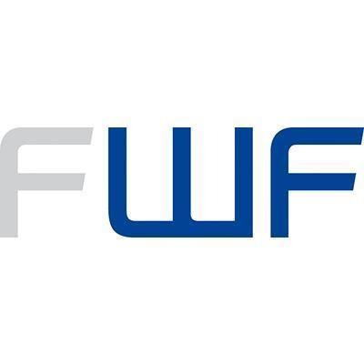
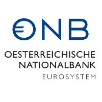
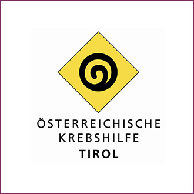
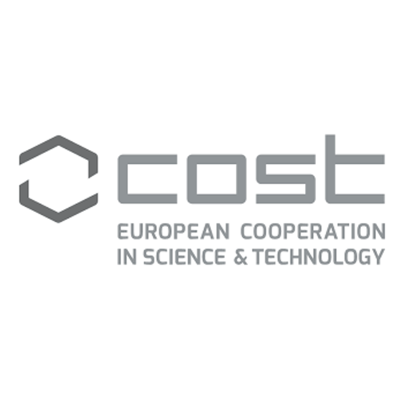
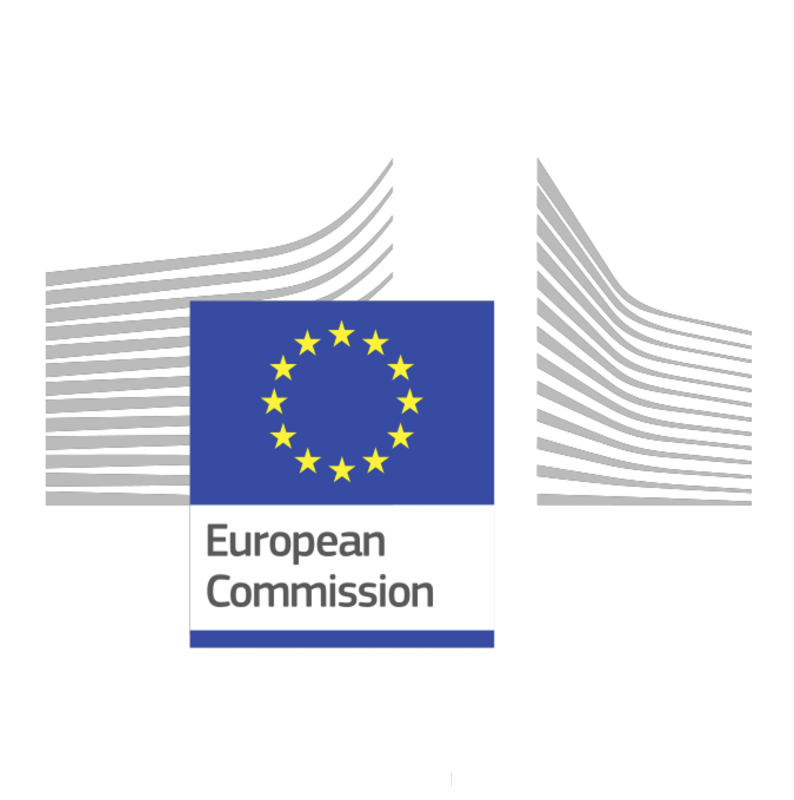

Funding
Funded projects
| Title | Year | Funding agency | Programme | Grant recipients |
|---|---|---|---|---|
| RectanglePro: advanced cell-type deconvolution | 2026 | UIBK and Förderkreis 1669 | 1669 Prototype development | PI: Francesca Finotello |
| Development of a computational platform to investigate tumor-associated neutrophils in breast cancer | 2026 | UIBK | Early Stage Funding | PI: Lorenzo Merotto |
| omnicellscope: developing a flexible and broadly applicable platform for expert-guided cell-type deconvolution in human immune-related diseases (IG20117) | 2025 | Horizon Europe | COST – European cooperation in science and technology | Co-PI: Francesca Finotello |
| A single-cell map of intratumoral changes during anti-PDL1 immunotherapy of patients with head and neck squamous cell carcinoma | 2025 | AURORA and Förderkreis 1669 | Research secondments | PI: Lorenzo Merotto |
| Shine the spotlight on intratumoral cDC2 and DC3 (spotDCnet) (doi: 10.55776/PAT5895324) | 2025 | Austrian Science Fund (FWF) | Principal Investigator Projects | Co-PI: Francesca Finotello |
| Computational reconstruction of digital cancer maps using systems biology and deep learning | 2023 | Förderkreis 1669 | Digital Innovation in Research and Teaching | PI: Francesca Finotello |
| BCL2 Network Adaptations in B Cell Transformation (BEAT IT) (doi: 10.55776/FG25) | 2023 | Austrian Science Fund (FWF) | Research Groups | Co-PI: Francesca Finotello |
| Spatial reconstruction of the cellular architecture of brain metastases | 2022 | AURORA | Mini Grant | PI: Francesca Finotello |
| Mye-InfoBank – Converting molecular profiles of myeloid cells into biomarkers for inflammation and cancer (CA20117) | 2021 | Horizon Europe | COST – European cooperation in science and technology | WG1 leader & MC member: Francesca Finotello |
| Prediction of non-canonical neoantigens for next-generation colorectal cancer immunotherapy (18496) | 2020 | Oesterreichische Nationalbank (OeNB) | Anniversary Fund | PI: Francesca Finotello |
| Computational reconstruction of a high-resolution map of the tumor-immune interface in human lung cancer (T 974-B30) | 2017 | Austrian Science Fund (FWF) | Hertha-Firnberg | PI: Francesca Finotello |
| quanTIseq: dissecting the immune contexture of human cancers (17003) | 2017 | Austrian Cancer Aid / Tyrol | Forschungsprojekten | PI: Francesca Finotello |




